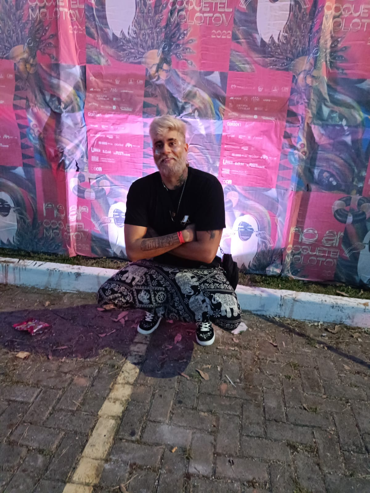

Eduardo Gomes
Front End Student
Contato
- +55 84 98161-6468
- eduardogomes.gan@hotmail.com
- https://github.com/EGO-Eduardo
Skills
HTML, CSS, Git & GitHub, JavaScript
Eduardo Gomes
Front End Student
Contato
Skills
HTML, CSS, Git & GitHub, JavaScript
Olá, sou o Eduardo;
Sou um estudante recente na área de desenvolvimento, trabalhava e estudava na área de administração e tenho experiencia com vendas, trabalho em equipe, capacidade resolutiva e de improvisação afiada.
AleSat Combustíveis
2016-2019
Assessor Comercial
Trabalhava como vendedor de combustíveis e lubrificantes para os postos de gasolina bandeira branca, atendendo a região de MG e MT
Riachuelo
2014-2015
Operador de Caixa
Trabalhava como operador de caixa na loja riachuelo, onde além da função de registrar vendas, também realizava venda dos planos e cartões da empresa.
Midway Mall
2015-2016
Auditor de vendas - Estágio
Monitorava e registrava o fluxo de entrada e saída de clientes, vendas, faixa etária, gênero etc... bem como quaisquer atividades suspeitas realizadas no estabelecimento.
UFRN
2015-2022
Administração - Bacharelado
30% realizado do curso de administração, com experiencia de mercado na área, porém desvinculação com a mesma
EBAC
22/11/2022 - 29/11/2022
Jornada Dev Week - FrontEnd
Jornada de 1 semana da plataforma EBAC ministrada pelos professores Daniel Santos e Pedro Brocaldi